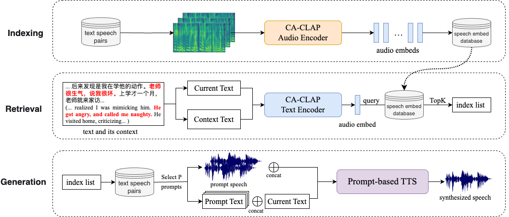
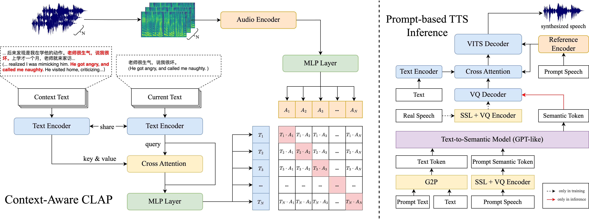

Retrieval Augmented Generation in Prompt-based Text-to-Speech Synthesis with Context-Aware Contrastive Language-Audio Pretraining
Abstract
Recent prompt-based text-to-speech (TTS) models can clone an unseen speaker using only a short speech prompt. They leverage a strong in-context ability to mimic the speech prompts, including speaker style, prosody, and emotion. Therefore, the selection of a speech prompt greatly influences the generated speech, akin to the importance of a prompt in large language models (LLMs). However, current prompt-based TTS models choose the speech prompt manually or simply at random. Hence, in this paper, we adapt retrieval augmented generation (RAG) from LLMs to prompt-based TTS. Unlike traditional RAG methods, we additionally consider contextual information during the retrieval process and present a Context-Aware Contrastive Language-Audio Pre-training (CA-CLAP) model to extract context-aware, style-related features. The objective and subjective evaluations demonstrate that our proposed RAG method outperforms baselines, and our CA-CLAP achieve better results than text-only retrieval methods.
Contents
Model Architecture


Evaluation
Groundtruth: the groundtruth speech.
Self: use the groundtruth text-audio pair as prompt, it serves as upper bound of prompt-based TTS performance.
Random: randomly select one text-audio pair as prompt text and prompt speech.
MiniLM: adopt text-only embedding model all-MiniLM-L6-v2 for retrieval.
CoROM: adopt text-only embedding model corom_sentence-embedding_chinese-base for retrieval.
Proposed: our proposed method using Context-Enhanced CLAP for retrieval.
Sample 0
Text: 不过总之，我觉得一味鼓吹西洋人那种积极进取的精神。
| groundtruth | Self | Random | MiniLM | CoROM | Proposed |
|---|---|---|---|---|---|
Sample 1
Text: 唐颜孝子挣脱了刑警，抱住丈夫的手臂。
| groundtruth | Self | Random | MiniLM | CoROM | Proposed |
|---|---|---|---|---|---|
Sample 2
Text: 尽管多元文化的概念听起来很美好。
| groundtruth | Self | Random | MiniLM | CoROM | Proposed |
|---|---|---|---|---|---|
Sample 3
Text: 哼说来说去。
| groundtruth | Self | Random | MiniLM | CoROM | Proposed |
|---|---|---|---|---|---|
Sample 4
Text: 但是已经有人把神父从我的手里抢出去。
| groundtruth | Self | Random | MiniLM | CoROM | Proposed |
|---|---|---|---|---|---|
Sample 5
Text: 换了一辆灰色轿车。
| groundtruth | Self | Random | MiniLM | CoROM | Proposed |
|---|---|---|---|---|---|
Sample 6
Text: 吵架了，自杀了，暴动了。
| groundtruth | Self | Random | MiniLM | CoROM | Proposed |
|---|---|---|---|---|---|
Sample 7
Text: 而在内心深处，我又是什么样子？
| groundtruth | Self | Random | MiniLM | CoROM | Proposed |
|---|---|---|---|---|---|
Sample 8
Text: 仔细看去，一男一女，相貌都很俊秀。
| groundtruth | Self | Random | MiniLM | CoROM | Proposed |
|---|---|---|---|---|---|
Sample 9
Text: 你无法阻止我们。
| groundtruth | Self | Random | MiniLM | CoROM | Proposed |
|---|---|---|---|---|---|
Sample 10
Text: 所谓蛋白质，也就是空气中的氮、氢氧等元素合成。
| groundtruth | Self | Random | MiniLM | CoROM | Proposed |
|---|---|---|---|---|---|